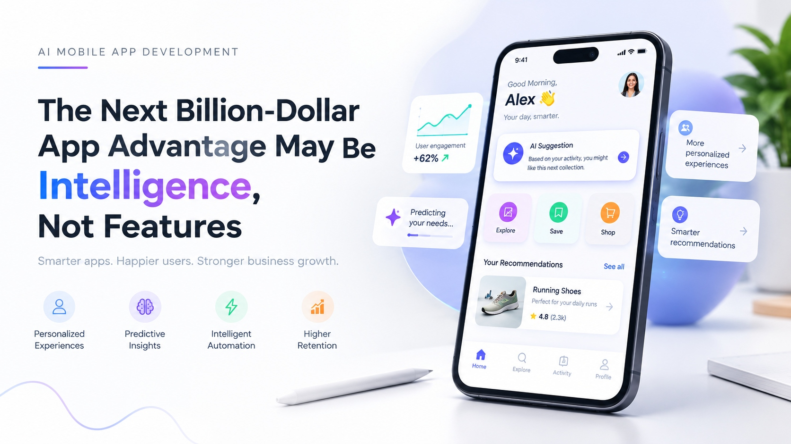

The Next Billion-Dollar App Advantage May Be Intelligence, Not Features

Open almost any successful app today and you will find a long list of features. Open the same app a year from now and you will probably find a longer list. Features accumulate because they are visible, measurable, and easy to ship, and for the same reasons they are easy for competitors to match.
What is harder to match is how well an app understands the person using it. Predictive Intelligence for Mobile Apps uses behavior, context, and history to anticipate the next need, so the product helps before it is asked. Each interaction teaches it something, and that learning belongs to the company that earned it.
This page follows one ordinary day to show the difference, then turns to the three decisions that determine whether such an app earns trust and results.
One day, two kinds of app
Alex opens the same app four times. The scenarios are illustrative.
7:45 a.m.
12:30 p.m.
6:10 p.m.
10:30 p.m.
Why this compounds into an advantage
Three reasons the gap widens with time.
It compounds
Every accepted or ignored suggestion is a lesson. Over time the product knows its users better than a rival starting from zero.
It is hard to copy
A competitor can copy a screen in one release. It cannot copy years of learning from your users, gathered with their consent.
It earns attention
Relevant suggestions reduce effort. Users return to products that save them time, not to those that ask for more of it.
A useful prediction feels like good judgment. An unexplained one feels like surveillance.
Three decisions for leaders
What will the app predict?
Choose one moment where a better guess would save the user effort. Predicting everything at once teaches nothing.
Ask your team: which moment do users repeat most?
How will you earn trust?
Use only data you can explain, say why a suggestion appears, and let users correct it or switch it off.
Ask your team: what would we tell a user who asks why they saw this?
How will you prove it worked?
Compare users who receive the intelligent feature with a control group, over enough time to see behavior change.
Ask your team: what result would make us stop?
Build an app that learns
Speak with the team about predictive, personalized mobile experiences, from the first prediction to production.
Visit zignuts.com